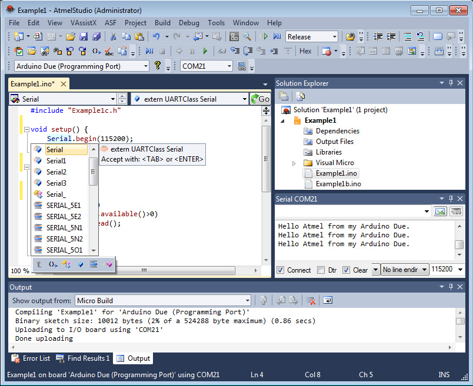
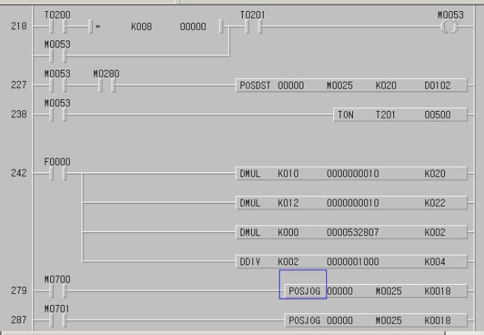
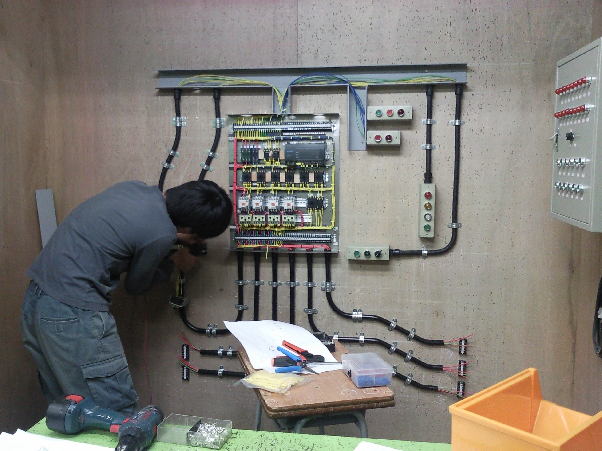

Electronics
전기배선, 전자보드, 고전압, 저전압, PLC, 마이크로 프로세서등의 전기전자기술 다루는 기술입니다.
관련 기술
- 전자 회로
- 논리회로의 칩제어, 다양한 전자제품을 제작기술 납땜,회로설계
- 시퀀스 제어
- 전기를 제어하기 위한 순차 제어(on/off 제어), 다양한 전기 배선작업에 사용
- PLC 제어
- 자동 제어 및 감시에 사용하는 제어 장치 , 시퀀스제어를 프로그램으로 단독 제어하여 사용
- 마이크로프로세서
- 초소형 연산장치:(컴퓨터 중앙처리장치 CPU)를 뜻함 다양한 프로그래밍으로 연산 처리를 하며 C/JAVA이전의 칩제어만을 위한 프로그래밍을 사용
Skill 숙련도70%
5년동안의 숙련으로 on,off 제어의 개념을 알고 하드웨어에서 소프트웨어로 범위를 확장 하였습니다.
-
마이크로 프로세서를 제어하는 AVR studio 프로그램

-
PLC프로그램을 제어하는 MASTER-k 프로그램

-
전기배선 공사를 실전으로 하는 이미지
